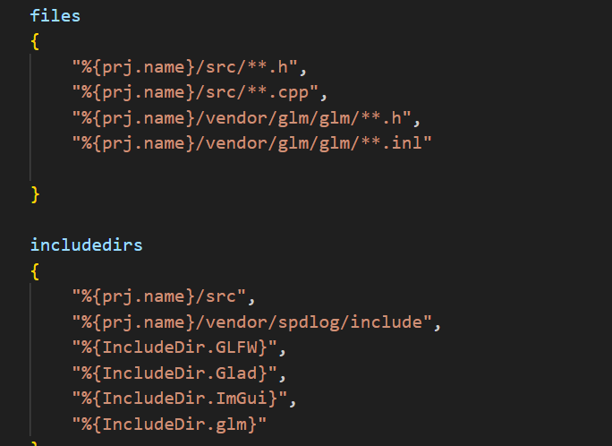

笔记12 按键和鼠标代码
需要将glfw的键码提出来放在平台层，创建属于引擎的键码，然后在不同的平台的实现文件做出转换键码。
这就像imgui呗，里面好多有imgui专属的键码，到了imgui_glfw内部还需要转换，glfw需要把自己的转换为imgui专属键码。
就是简单定义了HAZEL内部的键码，至于过多的转换等等，还没涉及。可能后面会补上。
暂且定义的宏还是从glfw的映射码一摸一样。
//KeyCodes.h
#pragma once
/* From glfw3.h */
#define HZ_KEY_SPACE 32
#define HZ_KEY_APOSTROPHE 39 /* ' */
#define HZ_KEY_COMMA 44 /* , */
#define HZ_KEY_MINUS 45 /* - */
#define HZ_KEY_PERIOD 46 /* . */
#define HZ_KEY_SLASH 47 /* / */
#define HZ_KEY_0 48
#define HZ_KEY_1 49
#define HZ_KEY_2 50
#define HZ_KEY_3 51
...
...
//MouseButtonCodes.h
#pragma once
//from glfw3.h
#define HZ_MOUSE_BUTTON_1 0
#define HZ_MOUSE_BUTTON_2 1
#define HZ_MOUSE_BUTTON_3 2
#define HZ_MOUSE_BUTTON_4 3
...
...
glm数学库
为了写好一个数学库常用到SIMD
SIMD（Single Instruction, Multiple Data，即单指令多数据）是一种并行计算技术，用于在单条指令中同时对多个数据元素执行相同的操作。
SIMD通常通过向量寄存器实现。这些寄存器可以存储多个数据元素（如 4 个 32 位浮点数），而SIMD指令集会直接对这些向量寄存器操作。
SIMD 指令集
现代 CPU 提供了多个 SIMD 指令集，常见的包括：
- SSE（Streaming SIMD Extensions）：由英特尔引入，最早在 Pentium III 处理器中出现，支持 128 位寄存器，可以操作多个单精度或双精度浮点数。
- AVX（Advanced Vector Extensions）：在 SSE 的基础上扩展了 256 位的寄存器，提高了并行处理能力。AVX 后续版本（如 AVX2 和 AVX-512）进一步提升了并行能力。
- NEON：ARM 处理器的 SIMD 指令集，主要用于移动设备和嵌入式系统，支持 128 位寄存器。
- Altivec/VMX：IBM 的 SIMD 指令集，最早在 PowerPC 架构中引入，具有 128 位寄存器。
SIMD 的优缺点
优点：
- 高效并行：在需要对大量数据进行相同操作时，能有效提升性能。
- 低延迟：相较于传统的循环结构，SIMD 能减少数据访问和指令执行的时间。
缺点：
- 数据依赖：只能处理相同类型、相同操作的数据，不适合对不同数据执行不同操作的情况。
- 硬件限制：不同处理器的 SIMD 指令集有所不同，代码的移植性可能受到影响。
- 编程复杂性：手动编写 SIMD 代码较为复杂，开发者需要了解底层指令集和寄存器操作。
glm只需要将文件路径添加到Hazel项目和Sandbox库里面就行了，同时将文件加载到Hazel里面，只有hpp文件和内联文件
想让实现对应的矩阵显示在imgui中供调试者。